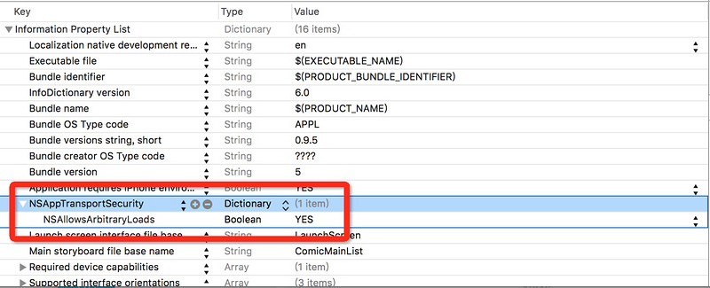

今天升级Xcode 7.0 bata发现网络访问失败。
输出错误信息
1 | The resource could not be loaded because the App Transport Security policy requires the use of a secure connection. |
Google后查证，iOS9引入了新特性App Transport Security (ATS)。详情：App Transport Security (ATS)
新特性要求App内访问的网络必须使用HTTPS协议。
但是现在公司的项目使用的是HTTP协议，使用私有加密方式保证数据安全。现在也不能马上改成HTTPS协议传输。
最终找到以下解决办法：
- 在Info.plist中添加
NSAppTransportSecurity类型Dictionary。 - 在
NSAppTransportSecurity下添加NSAllowsArbitraryLoads类型Boolean,值设为YES
看到很多同学修改后还是不能用添加一下截图：
- 在Filter中搜索
Info.plist，选择Info.plist进行编辑 - 按照上面提到的方式添加信息，正确的修改会看到下图这个样子，注意类型
NSAppTransportSecurity为Dictionary，NSAllowsArbitraryLoads为Boolean，复制粘贴的时候，不要多了空格，segment fault 页面上直接复制，经常会多一个出空格！
 - 注意⚠️，单元测试下面也有一个
Info.plist，修改那个文件是没有作用的！
补充说明
上面介绍的方法虽然解决了网络访问的问题，但是苹果提供的安全保障也被关闭了。
不过，按照国内的现状，关闭这个限制也许是更实际的做法。
至于原因就太多了，第三方SDK（几乎都是访问HTTP），合作伙伴接入（不能要求它们一定要支持HTTPS）。
如果你的App没有受到这些原因的限制，还是更建议你增加HTTPS支持，而不是关闭限制。
请大家根据项目的实际情况作调整。
出于安全考虑我们提倡使用HTTPS，退而求其次，优先考虑使用例外：将允许访问的域加入到配置列表中
@banxi1988 补充了配置的方法
对于实在不支持HTTPS的应该首先考虑添加例外
添加例外的方式也很简单：
左键Info.plist选择open with source code
然后添加类似如下的配置:
1 | <key>NSAppTransportSecurity</key> |
根据自己需要的域名修改， NSIncludeSubdomains 顾名思义是包括子域的意思。
参考：
- App Transport Security support aka apps on iOS 9 don’t work #4560
- 711_networking_with_nsurlsession.pdf
总结：
苹果正在加大应用安全的管控，这个举措可以看出苹果对信息安全的重视，也暴露出大部分应用传输数据时都是未经过加密的，或使用私有方式加密，以至于苹果开始对开发者提出要求。
私有加密虽然一定程度上是安全的，但是终究不是一个长久之计。全世界这么多安全专家在维护HTTPS安全，早日使用HTTPS确保信息安全才是王道！也省去了私有加密协议的安全隐患！